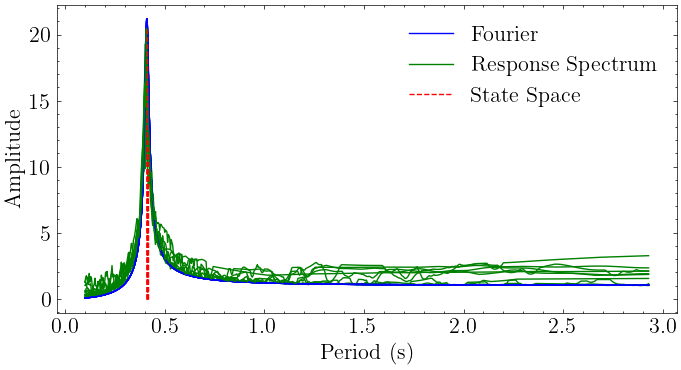

SISO for Event History#
[1]:
import numpy as np
from mdof.utilities.printing import *
import mdof
from mdof import modal, transform
from mdof.utilities.config import Config
Upload a Dataset and Identify Spectral Quantities#
[2]:
inputs = np.loadtxt("./uploads/opensees_sdof/Accgrd_set1.csv", delimiter=",")
outputs = np.loadtxt("./uploads/opensees_sdof/Accrsp_set1.csv", delimiter=",")
# inputs = np.loadtxt("./uploads/opensees_sdof/Accgrd_set2.csv", delimiter=",")
# outputs = np.loadtxt("./uploads/opensees_sdof/Accrsp_set2.csv", delimiter=",")
t = inputs[0,:]
dt = t[1] - t[0]
Method Inputs#
See `01_SISO_Intro <./01_SISO_Intro.ipynb>`__ for parameter definitions
[3]:
# Set parameters
conf = Config()
conf.m = 300
conf.horizon = 140
conf.nc = 140
conf.order = 2
conf.a = 0
conf.b = 0
conf.l = 10
conf.g = 3
conf.damping = 0.0001
conf.period_band = (0.1, 3.0)
Perform System Identification#
[4]:
mode_predictions = np.empty((inputs.shape[0]-1, 2))
plt.rc
fig, ax = plt.subplots(figsize=(8,4))
for i,motion in enumerate(inputs[1:,:]):
conf.decimation = 8 # transfer function decimation
A,B,C,D = mdof.system(method="srim", inputs=motion, outputs=outputs[i+1,:], **conf)
ss_modes = modal.system_modes((A,B,C,D),dt,decimation=conf.decimation)
mode_predictions[i,:] = [[1/v["freq"], v["damp"]] for v in ss_modes.values()][0] # save predicted period and damping
conf.decimation = 1 # transfer function decimation
periods, amplitudes = transform.fourier_transfer(inputs=motion, outputs=outputs[i+1,:], step=dt, **conf)
ax.plot(periods, amplitudes, color="blue", label=["Fourier" if i==0 else None][0])
periods, amplitudes = transform.response_transfer(inputs=motion, outputs=outputs[i+1,:], step=dt, periods=periods, threads=10, **conf)
ax.plot(periods, amplitudes, color="green", label=["Response Spectrum" if i==0 else None][0])
ax.vlines([1/v["freq"] for v in ss_modes.values()], 0, max(amplitudes), colors="r", linestyles="--", label=["State Space" if i==0 else None][0])
plt.legend()
plt.xlabel("Period (s)")
plt.ylabel("Amplitude")
print(" period(s) damping\n", mode_predictions)
100%|█████████▉| 885/886 [00:00<00:00, 43449.79it/s]
100%|█████████▉| 885/886 [00:00<00:00, 140370.56it/s]
100%|█████████▉| 885/886 [00:00<00:00, 524584.38it/s]
100%|█████████▉| 885/886 [00:00<00:00, 105184.44it/s]
100%|█████████▉| 885/886 [00:00<00:00, 29318.75it/s]
100%|█████████▉| 885/886 [00:00<00:00, 120463.39it/s]
100%|█████████▉| 885/886 [00:00<00:00, 26359.04it/s]
100%|█████████▉| 885/886 [00:00<00:00, 16509.04it/s]
100%|█████████▉| 885/886 [00:00<00:00, 21930.00it/s]
100%|█████████▉| 885/886 [00:00<00:00, 22432.14it/s]
100%|█████████▉| 885/886 [00:00<00:00, 18971.38it/s]
period(s) damping
[[0.41068031 0.02342356]
[0.41083068 0.02249289]
[0.4107063 0.00068529]
[0.41201371 0.02015356]
[0.41051848 0.02368659]
[0.4112227 0.02544649]
[0.40933146 0.01991049]
[0.41281326 0.0191038 ]
[0.40928958 0.02311352]
[0.41883737 0.0023086 ]
[0.40943662 0.02034821]]
